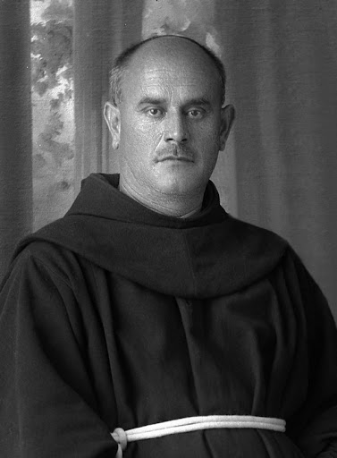

„Hoće li tko za mnom, neka se odreče samoga sebe, neka uzme svoj križ i neka ide za mnom.” (Mt 16,24)

Blaženi Serafin Kodić, rođen 1893. godine u Janjevu, bio je istaknuti franjevac koji je svoj životni put neraskidivo vezao uz Albaniju. Nakon školovanja u Skadru i Grazu, zaređen je za svećenika 1915. godine, u jeku Prvoga svjetskog rata. Tijekom svoje službe djelovao je kao župnik u brojnim albanskim župama, ali i kao profesor, ekonom te savjetnik svoje franjevačke provincije, istaknuvši se kao nositelj kulture i duhovnosti u burnim povijesnim vremenima.
Njegov rad prekinuo je uspon komunističkog režima nakon Drugoga svjetskog rata, koji je pokrenuo brutalan progon Katoličke Crkve u Albaniji. Fra Serafin je postao žrtvom lažnih optužbi i zavjera, zbog čega je uhićen i podvrgnut teškim mučenjima. Preminuo je od posljedica zlostavljanja 11. svibnja 1947. godine u Lješu, u zgradi samostana koja je tada bila pretvorena u bolnicu, u 54. godini života.
Njegovo mučeništvo ostalo bi skriveno da ga bolničarka Marie Ndoje nije kriomice pokopala ispod masline u samostanskom vrtu, što je omogućilo pronalazak njegovih kostiju 1994. godine. Danas njegovi posmrtni ostaci počivaju u franjevačkoj crkvi u Lješu. Fra Serafin Glasnović Kodić službeno je proglašen blaženim 2016. godine u Skadru, kao dio skupine od 38 albanskih mučenika koji su položili život za vjeru.